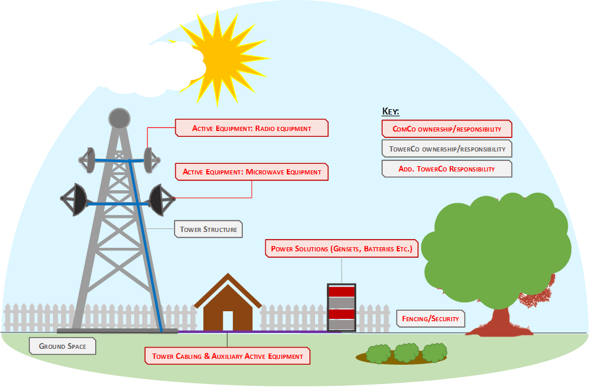
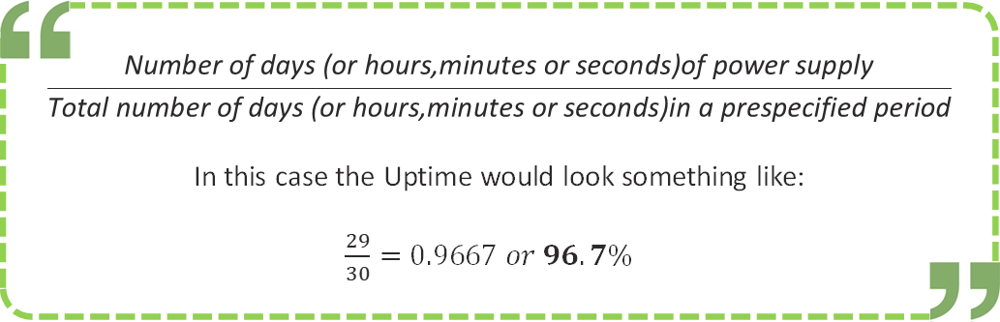
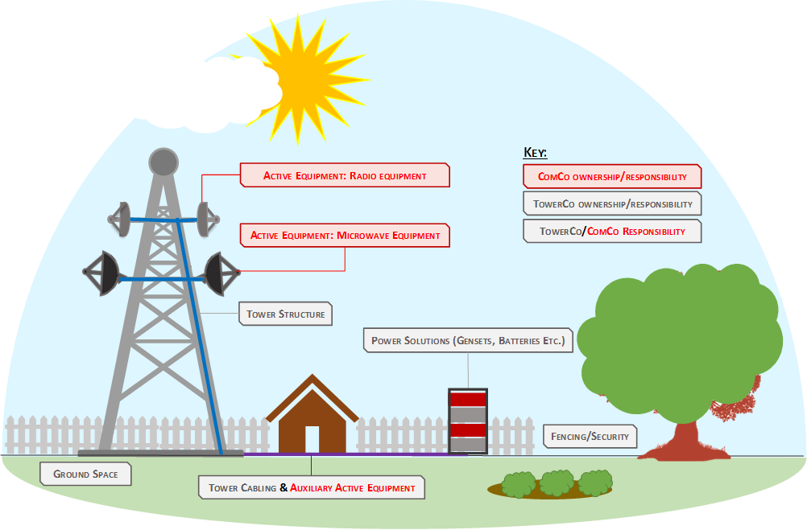
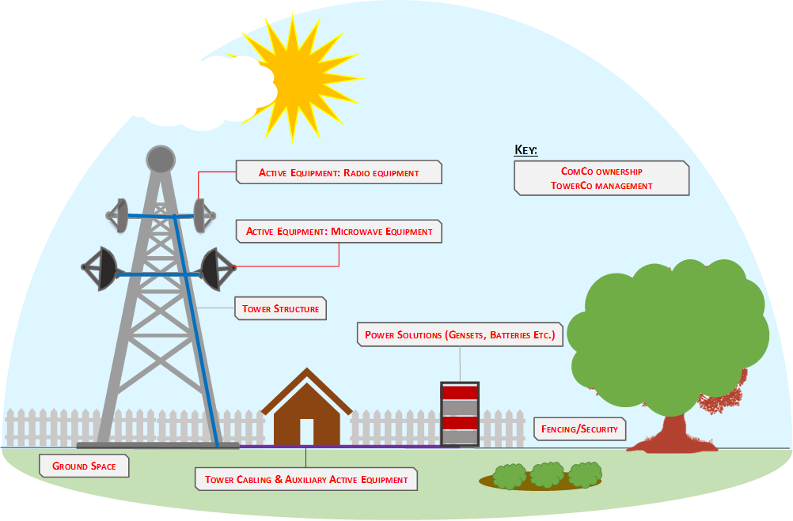
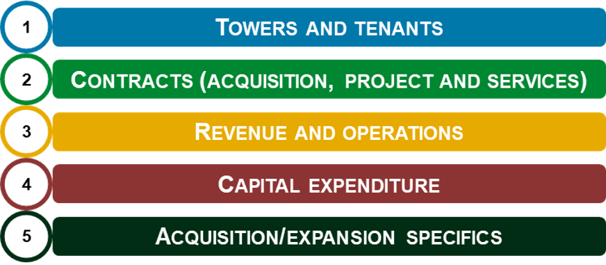
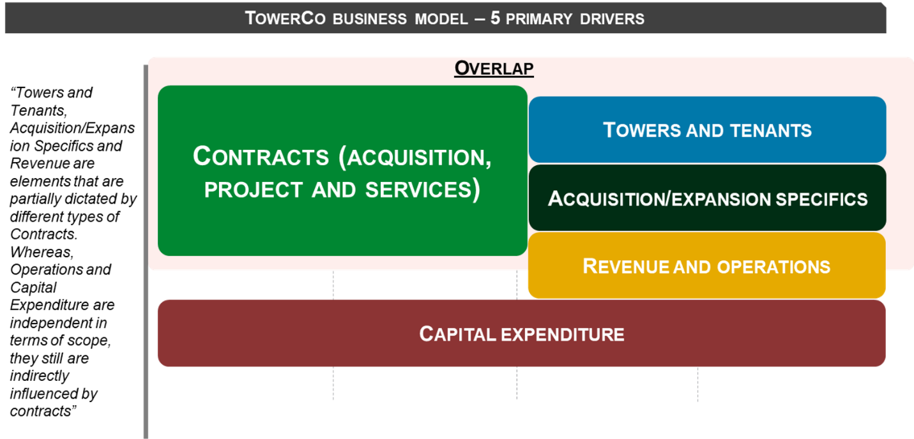
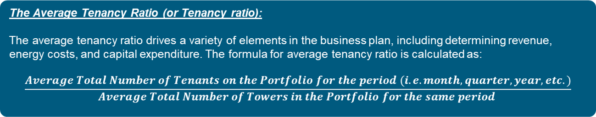
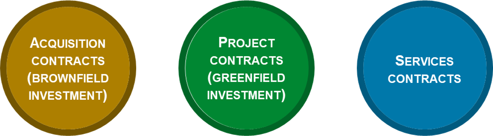
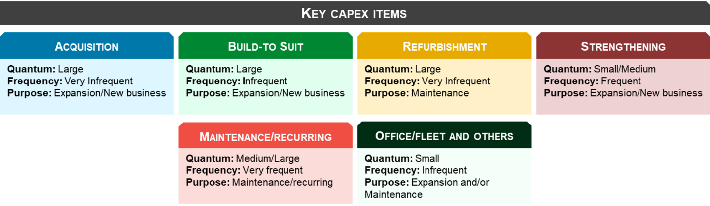
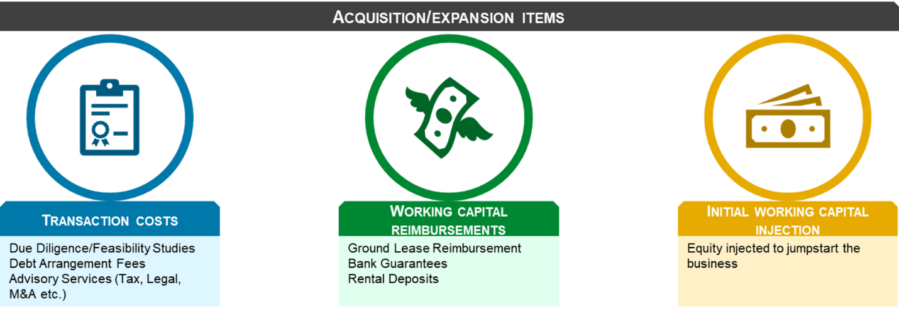

TowerCo Operational Models 📋
Towersharing Operational Models & The TowerCo Business Model (A Primer)
Disclaimer:
This article is for educational purposes only. Information presented has been compiled from multiple pieces of literature including Towerxchange.com and involves some data crunching conducted by the author. Since most TowerCos are under private ownership globally, data is available to the extent it is provided by Governments and/or TowerCos. Certain approximations have been made.
Please also review the General Disclaimer covering all content in and/or directed from Quantificate.ca.
After having reviewed the core components of a communication site (ref. Part 4 — Understanding Communication Sites and Assets), it will now be easy to understand the different operational models that a TowerCo offers to market to ComCos. So far there have been three models (two main and one slightly limited). These three models are the Traditional (or "Pureplay") Model, a Complete Passive Infrastructure Solutions (or "Value Added Services" — VAS) Model and a Managed Services Model.
1. The Pureplay Model 🏠

The Pureplay Model deals with the provision of steel and grass services to a ComCo. Simply put, a TowerCo offers the ComCo space on the tower to install its Active Equipment and space on the ground to house the ComCo's Auxiliary Active Equipment. The TowerCo functioning according to this model can be assumed close to a Real Estate Investment Trust ("REIT") — essentially providing real estate to the tenant in return for rent.
The Pureplay Model entails that a ComCo intending to board its equipment on a communication site is responsible for managing and on-boarding all the passive elements (other than the Tower Asset and Ground Space) to function its Active Equipment. Therefore, all power concerns, maintenance concerns, and security concerns are the responsibility of the ComCo.
⚠️ The Duplication Problem
If a site houses equipment of multiple ComCos, it leads to duplication of passive elements such as gensets, batteries and rectifiers (each ComCo brings its own). ComCos can theoretically reach sharing agreements, but issues arise around power sharing priorities, CAPEX sharing, and equipment quality standards.
To distance themselves from these difficult discussions, ComCos normally outsource these operational considerations to a TowerCo, governed under a Master Tower Service Agreement ("MTSA") with a Service Level Agreement ("SLA").
One of the major reasons TowerCos initially adopted the Pureplay Model links to geography. The US is an economy not plagued with recurring power outages, heavy auxiliary power requirements, or general theft/vandalism. Therefore, the need for a TowerCo to provide passive equipment was not a necessity. However, once TowerCos expanded into less progressive economies plagued by such issues, the need for another entity to assume responsibility became a reality.
Key SLA Components 📝
- Service Levels ("Uptime"): ComCos expect TowerCos to provide seamless, constant power supply. Uptime is measured as the percentage of time in a prespecified period that Active Equipment receives quality power supply. ComCos and TowerCos agree on a minimum Uptime threshold; breaching it triggers monetary penalties.

- Site Access: Optimal Site Access controls enable ComCos to service Active Equipment issues. The TowerCo serves as a bridge between the ComCo and the Ground Space landlord, with the SLA specifying procedures for both routine and emergency access.
- Security: Site and equipment security considerations are captured in the SLA — CCTV cameras, security guards, and other measures deployed at all times.
2. The Value Added Services (VAS) Model 🔧

A TowerCo functioning under this model aims to provide a complete passive infrastructure solutions package to a ComCo. This extends from the traditional provision of tower space and ground space to the provision of power supply, security, Passive Equipment Maintenance, passive infrastructure insurance and more.
The need for the VAS Model arose in regions where managing Passive Telecom Infrastructure Operations became as challenging (if not more) as managing the Active Equipment. Since managing Passive Telecom Infrastructure was of second priority to a ComCo, TowerCos were perceived to be in a better position to handle these issues.
🌍 Regional Origins: The VAS Model was first implemented in the CALA and SSA regions, where power outages, grid unavailability, remote sites, and security concerns (fuel theft, equipment theft, vandalism) were rampant and required dedicated focus. TowerCos expanded their scope in return for a higher monthly Lease Fee.
Today, the VAS Model is considered the predominant model for TowerCos globally. TowerCos spanning from the Far East to the American continent follow this model.
3. The Managed Services Model 🤝

A slightly overlapping model with VAS, the Managed Services Model refers to a TowerCo assuming responsibility for managing the passive infrastructure component without assuming ownership of the communication site and its equipment. This differs from the VAS Model where the TowerCo purchases the infrastructure and leases it back (Sale and Leaseback).
The Managed Services Model entails a TowerCo charging a Managed Services Fee (normally monthly or quarterly, on a cost-plus margin basis) plus an agreed percentage of collocation benefits — revenues realized from on-boarding additional ComCos onto a communication site. The TowerCo actively seeks collocation opportunities and therefore aims to benefit from the additional revenue it helps generate.
The TowerCo Business Model: A Primer 💼
Before we jump into the TowerCo Business Model, let's take a step back and understand a few key terms. The TowerCo Business Model is built on 5 primary drivers that govern different aspects of the acquisition and operation processes:


Driver 1: Towers and Tenants 🗼
Towers and Tenants refer to the quantum of towers that constitute a portfolio, and the respective ComCos that house their equipment as tenants. A tower portfolio normally ranges from a few (20–30 towers) to thousands. To circumvent the complexity of tracking individual towers, TowerCos calculate the "average tenancy ratio" across the portfolio.

Driver 2: Contracts 📄
Contracts determine the nature of relationship between ComCo and TowerCo. They generally fall under three categories:

Acquisition Contracts
The Asset Purchase Agreement (APA) or Share Purchase Agreement (SPA) covers the transfer of ownership. Common elements include: price, number and types of assets, transfer structure, taxes, warranties, pricing mechanism (lock box or closing accounts), conditions precedent, escrow mechanics, and payment schedules.
Project Contracts
Deal with Greenfield (new build) projects where a TowerCo constructs new towers. Usually paired with long term Services Contracts since the TowerCo needs to redeem capital invested. Cover: tower specifications, construction schedule, ownership, taxes, and warranties.
Services Contracts
Often referred to as "leaseback" in Sale and Leaseback. These are long term tenancy agreements (7+ years on average) and are the most comprehensive, regulating day-to-day engagements. Two major types:
- Master Tower Services Agreement (MTSA): TowerCo owns the asset, ComCo is tenant. TowerCo receives a "Use Fee".
- Managed Services Agreement (MSA): ComCo owns the tower, TowerCo manages operations for a management fee.
Driver 3: Revenue and Operations 💰
TowerCo customers are primarily ComCos — a limited customer base that can tilt bargaining power in favor of ComCos. However, TowerCo services have inelastic demand. Revenue comes from the Use Fee (rental), normally bifurcated into energy and non-energy components, subject to periodic escalations.

TowerCo expenditures break down into 8 main brackets: ground lease, energy, operations & maintenance, insurance, regulatory permits, security, other direct expenditures, and general & administration.
Driver 4: Capital Expenditure 🏗️
Capital expenditure deals with assets that provide utility for more than 1 year. TowerCo capex is normally clubbed into:

- Acquisition: Purchasing a portfolio or adding towers. Most infrequent and largest expense head.
- Build-to-Suit: Constructing new towers for greenfield projects.
- Refurbishment: One-time upgrades when acquiring a new portfolio.
- Strengthening: Structural and technical upgrades to support new tenants (steel frames, power equipment).
- Maintenance/Recurring: The most frequent routine capex — battery replacement, generator overhaul etc.
- Office/Fleet and Others: Office equipment, automobile fleet and residual items.
Driver 5: Acquisition/Expansion Specifics 📊
When considering organic (construction) or inorganic (acquisition) growth, certain leakages beyond the purchase/construction price are factored in — loosely described as closing costs:

- Transaction Costs: Due diligence/feasibility studies, debt arrangement fees, and advisory services (tax, legal, M&A).
- Working Capital Reimbursements: Portfolio ground lease reimbursement, bank guarantees, and rental deposits required by landlords.
- Initial Working Capital Injection: Cash injection to commence operations until the TowerCo becomes cash flow positive. Usually done through equity and reverse-engineered via business plan modelling.
What's Next? 🚀
This sums up the structure and a brief introduction of the TowerCo business plan and its drivers. Now that we are equipped with this information, the next few articles will dive deeper into the models, assumptions and mechanics of each business plan driver. 📈
Continue the Series 📚
This is Part 5 of the Towersharing Deep Dive series.
← Part 4: Communication Sites Explore More Articles